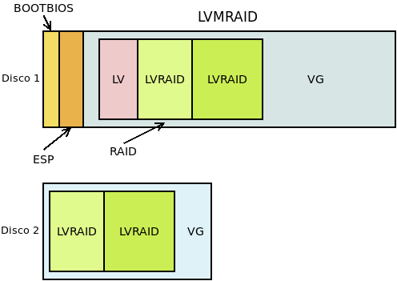

5.5.2.1.2. LVM¶
Desde su versión 2, LVM permite la creación y gestión de dispositivos RAID como si de volúmenes lógicos se tratara. Usa internamente el mismo driver del núcleo que mdadm, por lo que pueden contituirse los mismo niveles de RAID: 0, 1, 4, 5, 6 y 10. Es, pues, una buena alternativa si nuestra intención es crear volúmenes lógicos con redundancia, en vez de crear el RAID y definir después sobre el dispositivo virtual resultante un grupo de volúmenes. La gestión de volúmenes lógicos redundantes tiene su propia página de manual: lvmraid(7). Esta solución tiene algunas diferencias frente a definir LVM sobre un RAID:
En este caso, la tercera partición del disco, contiene un dispositivo RAID1 construido con mdadm que constituye todo él un grupo de volúmenes sobre el cual se definen los volúmenes lógicos. En cambio, si creamos dispositivos lógicos con RAID usando LVM:

La tercera partición es directamente un grupo de volúmenes dentro de los cuales pueden crearse volúmenes lógicos, reduntantes2 o no. Las soluciones no son exactamente equivalentes:
En la primera:
Sólo hay un dispositivo RAID.
Todos los volúmenes lógicos está en el RAID.
Es aconsejable que los dispositivos que constituyen el RAID sean iguales. En consecuencia, replicaremos la misma estructura en todos los discos y haremos que participen en el RAID las terceras particiones de cada cual.
En la segunda:
Hay un dispositivo RAID por cada volumen lógico redundante.
No todos los volúmenes lógicos tienen por qué ser dispositivos RAID.
Como dentro del grupo de volúmenes hay volúmenes lógicos redundantes y volúmenes no redundantes, los volúmenes físicos que lo constituyan no tienen que tener igual tamaño. Por ejemplo:
Por tanto, podemos no replicar las tablas de particiones en los restantes discos físicos o incluso no hacer tablas de particiones en ellos. Esto hará no arrancable esos discos, pero la solución será interesante de todas formas si nuestro interés está en hacer más improbable la pérdida de algunos datos o mejorar el rendimiento en el acceso y no tanto en asegurar la disponibilidad del sistema.
Alternativamente, podríamos hacer que todos los volúmenes lógicos fueran redundantes. En este caso, los volúmenes físicos que constituyen el RAID sí sería acoonsejable que fueran iguales y, por tanto, tendríamos un caso equivalente a la primera solución. Consecuentemente, podríamos particionar de igual manera los discos y hacerlos todos arrancables.
5.5.2.1.2.1. Preliminares¶
Preparemos las particiones de un disco a semejanza de como el que preparamos para mdadm:
# sgdisk -a 8 -n "0:40:2047" -t "0:0xef02" -c "0:BOOTBIOS" \
-a 2048 -n "0:2048:+100M" -t "0:0xef00" -c "0:EFI" \
-N 0 -c "3:LVM" -t "3:0x8e00" /dev/loop0
Para el segundo disco, podemos hacer dos cosas:
Copiar la tabla si nuestra intención es crear una solución equivalente a la hecha con mdadm. En esta solución todos los volúmenes lógicos son redundantes.
Añadir directamente el segundo disco al grupo de volúmenes, poque nuestra intención es mezclas volúmenes redundantes con volúmenes que no lo son. En este caso, sólo el primer disco será arrancable.
Ilustramos la creación y gestión de RAIDs con esta segunda solución. Por tanto:
# pvcreate /dev/loop0p3
# pvcreate /dev/loop1
# vgcreate VGraid /dev/loop0p3 /dev/loop1
# vgs VGraid
VG #PV #LV #SN Attr VSize VFree
VGraid 2 0 0 wz--n- 940,00m 940,00m
Tenemos casi un grupo de volúmenes de casi 1GiB de capacidad. Lo que falta es, descontados los metadatos, el espacio que ocupan las dos particiones de arranque del primer disco.
5.5.2.1.2.2. Creación¶
Para crear volúmenes lógicos redundantes, basta con usar lvcreate, aunque con las opciones adecuadas. Por ejemplo, empecemos por crear un volumen no redundante:
# lvcreate -L 100M -n uno VGraid
# vgs VGraid
VG #PV #LV #SN Attr VSize VFree
VGraid 2 1 0 wz--n- 940,00m 840,00m
# lvs VGraid
LV VG Attr LSize Pool Origin Data% Meta% Move Log Cpy%Sync Convert
uno VGraid -wi-a----- 100,00m
Como es natural, ahora hay 100MiB libres menos. Creemos otro volumen lógico que sea un RAID 1 de 200MiB:
# lvcreate --type raid1 -L 200M --mirrors 1 --nosync -n 1 VGraid
Para crearlo hemos incluido --type que nos permite indicar el tipo de RAID (que no puede ser más que un RAID 1 porque sólo hay dos volúmenes físicos); --mirrors con el que indicamos el número de espejos (excluido el original); y --nosync que evita que se intente sincronizar los volúmenes físicos. Si consultamos el resultado:
# vgs
VG #PV #LV #SN Attr VSize VFree
VGraid 2 2 0 wz--n- 940,00m 432,00m
# lvs VGraid
LV VG Attr LSize Pool Origin Data% Meta% Move Log Cpy%Sync Convert
1 VGraid Rwi-a-r--- 200,00m 100,00
uno VGraid -wi-a----- 100,00m
Nota
Adicionalmente, se pueden añadir en la creación los volúmenes físicos sobre los que queremos que se construya el RAID13: basta con haberlos añadido al final:
# lvcreate --type raid1 -L 200M --mirrors 1 --nosync -n 1 VGraid /dev/loop0p3 /dev/loop1
veremos que no se han ocupado 200MiB, sino, obviamente, el doble. Además, para
/dev/VGraid/1 observamos en los atributos una «R», que indica que el
volumen es redundante.
Nota
En la definición de los RAID i0, 4, 5 y 6, no debe usarse --mirrors sino --stripes, que define los volúmenes que no son se usan para paridad. En un RAID 10, se usa tanto --mirrors como --stripes.
5.5.2.1.2.3. Consulta¶
Las salidas «normales», no obstante, dan muy poca información, así que para los RAID es mejor recurir a otras:
# lvs -a -o name,copy_percent,seg_type,devices VGraid
LV Cpy%Sync Type Devices
1 100,00 raid1 1_rimage_0(0),1_rimage_1(0)
[1_rimage_0] linear /dev/loop0p3(26)
[1_rimage_1] linear /dev/loop1(1)
[1_rmeta_0] linear /dev/loop0p3(25)
[1_rmeta_1] linear /dev/loop1(0)
uno linear /dev/loop0p3(0)
Ahora sí podemos ver:
Que el volumen redundante es un RAID 1.
Que sus volúmenes físicos están completamente sincronizados.
Que está consituido por dos dipositivos.
Que esos dispositivos están uno en el volumen físico
/dev/loop0p3y otro en/dev/loop1. La inclusión de esos dispositivos (subvolúmenes en la terminología de LVM) se debe a la inclusión de la opción -a.
5.5.2.1.2.4. Modificación¶
Veremos cómo:
Aumentar la capacidad
Agregar un volumen físico.
Eliminar un volumen físico.
Sustituir un disco.
Tranformar un volumen en un RAID.
Añadir un disco de reserva.
Aumentar la capacidad del RAID
Basta con aumentar el volumen lógico del modo ya visto para volúmenes no
redundantes. Sin embargo, antes de hacerlo, creemos un volumen no redundante en
/dev/loop1 para confirmar que en las ampliaciones no hace falta que los
espacios de disco sean contiguos:
# lvcreate -n dos -L 50M VGraid /dev/loop1
Y ahora sí ampliamos en 50MiB el RAID existente:
# lvextend -L +50M /dev/VGraid/1
# lvs -a -o name,size,seg_type,devices VGraid
LV LSize Type Devices
1 300,00m raid1 1_rimage_0(0),1_rimage_1(0)
[1_rimage_0] 300,00m linear /dev/loop0p3(26)
[1_rimage_1] 300,00m linear /dev/loop1(1)
[1_rimage_1] 300,00m linear /dev/loop1(76)
[1_rmeta_0] 4,00m linear /dev/loop0p3(25)
[1_rmeta_1] 4,00m linear /dev/loop1(0)
dos 100,00m linear /dev/loop1(51)
uno 100,00m linear /dev/loop0p3(0)
Agregar un volumen físico
Primero es necesario que el volumen físico pertenezca al grupo de volúmenes:
# truncate -s 500M 2.disk
# losetup /dev/loop2 2.disk
# pvcreate /dev/loop2
# vgextend VGraid /dev/loop2
# pvs
PV VG Fmt Attr PSize PFree
/dev/loop0p3 VGraid lvm2 a-- 444,00m 88,00m
/dev/loop1 VGraid lvm2 a-- 496,00m 188,00m
/dev/loop2 VGraid lvm2 a-- 496,00m 496,00m
Hecho lo cual, basta con usar lvconvert:
# lvconvert --mirrors +1 /dev/VGraid/1 /dev/loop2
Tras la orden se añadirá el tercer dispositivo al RAID 1 y comenzará la syncronización.
Eliminar un volumen físico
La operación inversa, mientras exista redundancia de más, es idéntica:
# lvconvert --mirrors -1 /dev/VGraid/1 /dev/loop2
Sustituir un disco.
Partamos de que nuestro RAID 1 tiene dos discos y se rompe uno, lo cual
podemos emularlo, desactivando el RAID y haciendo deshaciendo la relación
entre 1.disk y 2.disk:
# vgchange -an VGraid
# losetup -d /dev/loop1
# vgchange -ay VGraid
Couldn't find device with uuid M3JEem-FlP3-Um35-LUZS-cwni-5ml1-pDqCJh.
Refusing activation of partial LV VGraid/dos. Use '--activationmode partial' to override.
2 logical volume(s) in volume group "VGraid" now active
# lvs -a -o name,attr /dev/VGraid/1
LV Attr
1 rwi-a-r-p-
La «p» que se encuentra en los atributos denota que se ha producdo un problema.
Como ya tenemos /dev/loop2 añadido al grupo de volúmenes, podemos
indicarle al software que repare el RAID lo que se traduce en que este
utilice el volúmen físico disponible como espejo:
# lvconvert --repair /dev/VGraid/1
# lvs -a -o name,attr,devices VGraid
LV Attr Devices
1 rwi-a-r--- 1_rimage_0(0),1_rimage_1(0)
[1_rimage_0] iwi-aor--- /dev/loop0p3(26)
[1_rimage_1] iwi-aor--- /dev/loop2(1)
[1_rmeta_0] ewi-aor--- /dev/loop0p3(25)
[1_rmeta_1] ewi-aor--- /dev/loop2(0)
dos -wi-----p- [unknown](51)
uno -wi-a----- /dev/loop0p3(0)
Ahora el RAID está formado con espacio de 0.disk y
2.disk. EL volumen lógico no redundante /dev/VGraid/dos, que
se encontraba todo él sobre /dev/loop1 está perdido y lo mejor sería
eliminarlo:
# lvremove /dev/VGraid/dos
Tras lo cual podríamos eliminar /dev/loop1 del grupo de volúmenes:
# vgreduce --removemissing VGraid
# pvremove /dev/loop1
Añadir un disco de reserva
Advertencia
La versión de lvm2 que trae buster tiene un bug que impide que el disco de reserva se incluya automáticamente en el RAID. Sin ese bug, lo expuesto aquí debería funcionar.
En los RAIDs hechos con LVM, cualquier volumen físico adicional con
sufiente espacio se considera un disco de reserva si en el fichero
/etc/lvm/lvm.conf la variable raid_fault_policy tiene el valor
allocate. Su valor predeterminado es:
# lvm dumpconfig activation/raid_fault_policy
raid_fault_policy="warn"
que, simplemente, informa en el registro del error, pero sin llevar a cabo ninguna acción (tampoco enviar un correo electrónico al administrador). Si editamos el fichero convenientemente, podremos poner el valor adecuado:
# lvm dumpconfig activation/raid_fault_policy
raid_fault_policy="allocate"
Si partimos del estado anterior, tenemos un grupo de volúmenes constituido por
/dev/loop0p3 y /dev/loop2, pero no por /dev/loop1 al que
desvinculamos por completo del RAID y del grupo de volúmenes. Volvamos a
introducirlo para que nos sirva como dispositivo de reserva:
# pvcreate /dev/loop1
# vgextend VGtest /dev/loop1
AHora debemos provocar un fallo en, por ejemplo, /dev/loop2 para que el
RAID se reconstruya tomando automáticamente /dev/loop1.
Desgraciadamente, LVM no proporciona ninguna herramienta para simular fallos,
así que debemos buscarnos la vida. Si el dispositivo fuera la partición de un
disco físico real (pongamos que /dev/sdz), entonces bastaría con
cambiarle su estado:
# echo "offline" > /sys/class/block/sdz/device/state
pero, como hacemos pruebas sobre un dispositivo virtual la cosa es más
complicada. Una estrategia es averiguar cómo se llama su subvolumen
correspondiente del RAID. En la salida de lvs de más arriba
/dev/loop2 está asociado a 1_rimage_1, por lo que el dispositivo
asoaciado es /dev/mapper/VGraid-1_rimage_1. Podemos comprobarlo así:
# dmsetup table VGraid-1_rimage_1
0 204800 linear 7:2 10240
Para provocar un error, debe hacerse:
# echo "0 204800 error" | dmsetup reload VGraid-1_rimage_1
# dmsetup resume VGraid-1_rimage_1
Si a la vez estuviéramos consultándo el registro con:
# journalctl -fn0
habríamos visto una línea similar a esta:
dic 14 23:43:25 debian kernel: Buffer I/O error on dev dm-9, logical block 25584, async page read
y al intentar hacer cualquier operación sobre el RAID (por ejemplo, darle
formato a /dev/VGraid-1), saltará la liebre:
dic 14 23:46:16 debian lvm[561]: WARNING: Device #1 of raid1 array, VGtest-raid1, has failed.
En este momento debería ocupar el disco de reserva el puesto del fallado y comenzar la sincronización4. Ya sólo queda quitar el disco defectuoso del grupo de volúmenes:
# vgreduce VGraid /dev/loop2
Transformar un volumen lógico en un RAID
Una posibilidad muy interesante es convertir un volumén lógico que no se definió como RAID en un volumen RAID, lo cual sería el equivalente a haber creado con mdadm un RAID 1 degradado con un sólo disco. Para ello basta con tener espacio suficiente en otro volumen físico y usar lvconvert para transformar el volumen en un RAID:
# lvconvert -y --type raid1 --mirrors 1 /dev/VGraid/uno
Aprovisionamiento fino
Es posible convertir un volumen RAID en un pool para aprovisionamiento
fino (pero no al revés). Esto permitiría implementar el
aprovisionamiento fino con las ventajas del RAID. Así, suponiendo que nuestro
volumen en RAID es /dev/VGraid/1:
# lvconvert --type thin-pool /dev/VGraid/1
Advertencia
Si se obra así, los metadatos del aprovisionamiento no se encontrarán en RAID, lo que destruye la redundancia. Lo mejor en este caso es colocar los metadatos en un volumen RAID aparte. Consulte lvmthin(7).
Notas al pie
- 1
Obviamente habrá al menos otros disco idéntico para que tenga sentido cualquier tipo de RAID.
- 2
Entiéndase por volumen lógico redundante un volumen lógico que contituye un RAID, incluo aunque sea de nivel 0, el cual no es redundante.
- 3
En realidad, definir sobre qué volumen físico se quiere definir el volumen lógicos se puede hacer sobre cualquier tipo de volumen lógico, incluso en aquellos que no son redundantes.
- 4
Pero por culpa del bug de la versión de LVM tendremos que lanzar a mano la reparación para que se utilice el disco de reserva:
# lvconvert --repair /dev/VGraid/1